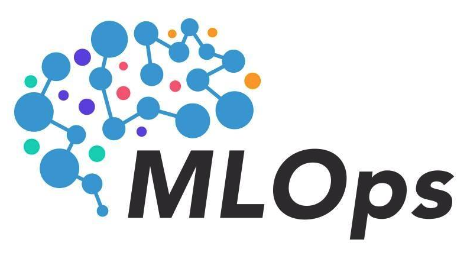

Below are notes I gathered from my readings in MLOps as well as deplying ML systems at different companies.
- During training, we care more about throughput. However, once we deploy the model, we care more about latency.
- Increased latency in production leads to reduction in customer satisfaction and conversion rates, which are more important than a relatively more accurate predictions.
- It is commen to focus on the high percentiles of the latency such as 90th/95th/99th or even 99.9th percentiles.
- Map ML metrics to business metrics and see how improvement in ML model would lead to an improvement in business metrics.
- In some cases, ML is just a small part of the overall process that makes it hard to attribute loss/revenue to a particular component in the process.
- Requirements of ML systems:
- Reliability: ML systems performs correct function in the case of failures. How do we check if predictions are not wrong?
- Scalability: ML system can grow in:
- Model complexity
- Number of models
- Number of requests served by each ML model
- Maintainability: Code should be documented. Code, data, and artifacts should be versioned. Experiments and models should be able to be reproduced
- Adaptability: ML system should adapt quickly to change in data distribution and business requirements
- Developing an ML system is an iterative process that we typically go back and forth between different steps such as: scoping project, data engineering, model development, model deployment, monitoring and retraining, business analysis, etc.
- For multiclass classification problems with a lot of classes, it may be helpful to frame it as a hierarchical classification where each example is first classified into few major classes then another classifier is used to classify subclasses and so on.
- For mutlilabel classification problems, we either build a binary classifier for each label or use one model for all labels
- It is more challenging to build one model with multilabel because now we need to figure out how to get predictions out of raw probabilities
- If we have multiple objectives, it is better to decouple the objectives and train different model for each objective. Finally, get the final score of each prediction by combining the output from each model using different weight for each objective (which can be tuned based on business priorities). This way we can change one model without the need to retrain all the models.
- Data-centric approach to ML model development tends to lead to the best results as compared to algorithm-centric approach. Data is the critical piece in obtaining good performance if we have decent architecture.
- Types of data:
- first-party data: Data collected by companies about their customers
- Second-party data: Data collected by another companies about their customers
- Third-party data: Data collected on the public on who aren’t their customers
- User data are the most messy and require heavy cleanups
- Data passing modes through:
- Databases. Not recommended for applications with strong latency requirements
- Services using requests such as REST or RPC. Recommended for applications that rely more on logic than data. It is called
request-driven/microservice architecture, which is the most common - Real-time transport such as Kafka. Recommended for applications that are data-heavy. It is called
event-drivenarchitecture.
- Batch features (also called static features) are features that aren’t expected to change frequently, which are computed using batch processing.
- Streaming features (also called dynamic features) are features that changes quickly, which are computed using stream processing.
- Sampling Methods:
- Nonprobability sampling such as selecting the most recent data
- Random sampling
- Stratified random sampling
- Weighted sampling
- Reservoir sampling
- Importance sampling
- Extracting labels from feedback: User feedback goes through different stages where each stage has different volume, strength of signal, and feedback loop length
- There is a trade-off between accuracy and speed of the feedback loop window. The shorter the feedback loop window the less accurate the labels. But also the longer the feedback loop window the longer to notice and fix model problems.
- Data labeling:
- Weak supervision: Have no labeled data and use labeling functions to label data (Snorkel)
- Semi supervision: Have limited labeled data that are used to generate more labels through different methods such as perturbation
- Transfer learning
- Active learning: Selectively pick the samples to train the model on such as the most confident wrong samples
- Class imbalance: There are different degrees of class imbalance.
- It affects learning algorithms in many ways:
- Algorithm didn’t have sufficient signals from rare classes
- Algorithm may use simple heuristics to always output majority class to get best metric
- Rare classes have typically asymmetric costs of errors such as if the X-ray is cancerous. Therefore, we might need to build a model that is more accurate on the rare classes and less accurate on the majority class(es)
- The more complex the problem -> the more sensitive the algorithm(s) to class imbalance. If classes are linearly separable, class imbalance has no effect.
- Solutions:
- Data resampling methods:
- Undersampling
- Oversampling
- SMOTE: oversampling technique
- Tomek links: undersampling technique where two similar samples from opposite classes are chosen and the one from majority class is dropped
- Dynamic sampling: Undersample majority class to all classes have the same number of samples and train the model on the resampled data. Then fine tune the model on the original imbalanced data
- Algorithm methods:
- Define cost sensitive matrix that will be used in the loss function
- Class-balanced loss where each sample has weight of misclassification that is inversely proportional to the number of samples it belongs to
- Focal loss: Focus on learning the samples that model has difficulty in classifying; i.e. has the low probability of being right
- Ensembles sometimes help with class imbalance
- Data resampling methods:
- It affects learning algorithms in many ways:
- Data augmentation
- Label-preserving transformations such as randomly flipping images or replace word with its synonym in NLP tasks
- Purturbation that adds noise to the data but still preserve the label. BERT uses such technique where 15% of the tokens are chosen randomly and 10% of such chosen tokens will be replaced by random tokens.
- Data synthesis: create data from existing data such as mixup or using templates in NLP